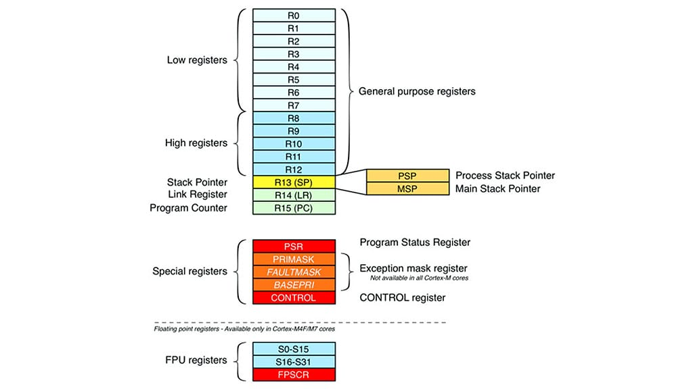

Saklayıcı olarak da adlandırılan bu birim, işlemcide verileri depolamak ve o verilere hızlı bir şekilde ulaşabilmek adına kullanılan ufak hafızalardır.
ARM mimarisinde genel amaçlı ve özel amaçlı registerlar vardır. Bunlar belirli görevleri yerine getirmek için tasarlanmış ve genellikle işlemcinin performansını artırmak amacıyla kullanılan registerlardır.
R0 - R12: Bu registerlar genel amaçlıdır ve programcı tarafından herhangi bir veri saklamak için kullanılabilir. Her biri 32 bit (ARMv7) veya 64 bit (ARMv8) genişliğinde olabilir.
Program Counter (PC): İşlemcinin şu anda yürütmekte olduğu komutun adresini tutar. Programın akışını kontrol etmek için kullanılır.
Stack Pointer (SP): Yığın (stack) belleğinin en üst adresini gösterir. Fonksiyon çağrıları ve yerel değişkenler için bellek yönetiminde kullanılır.
Link Register (LR): Fonksiyon çağrıları sırasında geri dönüş adresini tutar. Bir fonksiyon çağrıldığında, dönüş adresi bu register'a kaydedilir.
Current Program Status Register (CPSR): İşlemcinin durumunu ve kontrol bilgilerini tutar. Durum bayrakları (örneğin, taşma, sıfır, negatif) ve işlemci modları hakkında bilgi içerir.
Saved Program Status Register (SPSR): Kesme veya istisna durumlarında CPSR'nin bir kopyasını saklar. Bu, işlemci kesme veya istisna işleme döndüğünde önceki durumu geri yüklemek için kullanılır.
Banked Registers: ARM mimarisinde bazı registerlar, farklı işlemci modları için bankalanmış olarak bulunur. Örneğin, FIQ (Fast Interrupt Request) modunda özel registerlar bulunur.
